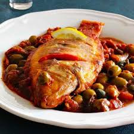

30.Veracruz

- Platillo: Huachinango a la veracruzana
- Ingredientes: Huachinango (pescado rojo), jitomate, aceitunas, alcaparras, cebolla, laurel.
- Historia: Combina ingredientes indígenas con los traídos por los españoles, como el aceite de oliva y las alcaparras.
- Dato curioso: Es uno de los pocos platillos mexicanos con una base mediterránea clara.